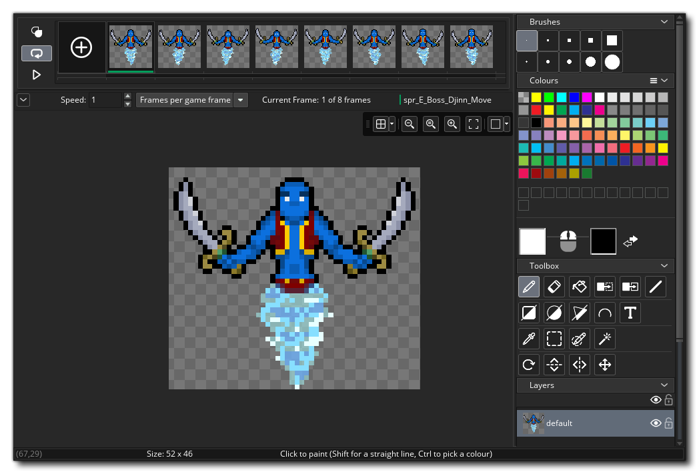

Wir beginnen diesen Abschnitt der Kurzanleitung, indem wir Sprites betrachten, die normalerweise eines der ersten Dinge sind, die Sie benötigen, wenn Sie ein Projekt in GameMaker Studio 2. Wie im Abschnitt Ressourcen erklärt, ist ein Sprite ein Bild, das animiert werden kann (obwohl es nicht sein muss) und dann auf den Bildschirm gezeichnet wird. Im Allgemeinen wird ein Sprite einem Objekt zugeordnet, aber Sie können Sprites selbst zeichnen, entweder aus dem Code oder im Raum-Editor Asset Layer (mehr dazu später). Sie können auch ein Sprite erstellen, das als Kachelset verwendet werden soll. Wir werden diese Option jedoch später ebenfalls untersuchen.
Wenn Sie ein neues Projekt auf der Startseite erstellen, enthält Ihr Ressourcenbaum nur leere Ordner für die Ressourcen, die Sie möglicherweise benötigen. Sie müssen also mit der rechten Maustaste klicken  im Sprite-Ressourcenordner und wählen Sie dann die Option Erstellen. Dadurch wird ein neues Sprite erstellt und der Sprite-Editor für Sie geöffnet (wenn der Sprite-Editor nicht geöffnet wird, doppelklicken Sie einfach
im Sprite-Ressourcenordner und wählen Sie dann die Option Erstellen. Dadurch wird ein neues Sprite erstellt und der Sprite-Editor für Sie geöffnet (wenn der Sprite-Editor nicht geöffnet wird, doppelklicken Sie einfach  auf der neuen Ressource):
auf der neuen Ressource): 
Wie Sie wahrscheinlich sehen können, befindet sich oben links im Fenster ein Feld für den "Namen" des Sprites. Alle Sprites (und alle anderen Ressourcen) müssen mit einem Namen versehen sein, damit Sie (und GameMaker Studio 2 ) sie leicht identifizieren können, obwohl Sie beachten sollten, dass dieser Name wirklich nur eine Variable ist, die einen ID-Wert enthält, der "Punkte" an die Ressource, in diesem Fall ein Sprite. Am besten geben Sie jedem Sprite einen aussagekräftigen Namen, damit Sie auf einen Blick erkennen können, ob es sich bei einer bestimmten Ressource um ein Sprite, ein Objekt oder etwas anderes handelt, und viele Personen dies tun, indem Sie der Ressource die Buchstaben " spr " voranstellen Beispiel "spr_Ball". Beachten Sie, dass Ressourcennamen nur Buchstaben, Ziffern und das Unterstrichsymbol "_" im Namen eines Sprites (und jeder anderen Ressource) verwenden dürfen. Alle Ressourcen müssen mit einem Buchstaben und nicht mit einer Zahl beginnen.
Die anderen Funktionen des Sprite-Editors werden wir am Ende dieses Abschnitts besprechen, aber zuerst müssen wir erklären, wie man ein Sprite zeichnet. Dies geschieht im Bild-Editor. Der Bild-Editor ist ein sehr leistungsfähiges Werkzeug zum Erstellen der Grafiken in Ihrem Spiel und wird geöffnet, indem Sie auf die Schaltfläche Bild bearbeiten klicken.  Wir werden nicht zu sehr auf die hier verfügbaren Tools eingehen - dafür haben wir den Image Editor Abschnitt des Handbuchs - aber kurz haben Sie:
- Oben links die Rahmenansicht - hier sehen Sie den / die Rahmen Ihres Sprites und können mit den Lupensymbolen angepasst werden.
- In der Mitte haben wir die Zeichenfläche - diese zeigt den aktuell ausgewählten Rahmen zum Zeichnen an und Sie können die mittlere Maustaste verwenden
herumschwenken und das Mausrad
- Oben rechts haben wir die grundlegenden Pinsel - hier können Sie den Pinsel zum Zeichnen auswählen, und alle benutzerdefinierten Pinsel werden hier ebenfalls hinzugefügt
- In der Mitte rechts haben wir den Farbwähler - hier können wir die Farbe auswählen, die für die linke und / oder rechte Maustaste verwendet werden soll, da Sie mit einem oder den anderen Knöpfen gleichzeitig auf der Leinwand zeichnen können
- Direkt unter dem Farbwähler haben wir unsere Werkzeuge - das sind die verschiedenen Zeichenwerkzeuge, einschließlich der Pinsel-, Flutfüllungs-, Maskierungs- und Formwerkzeuge. Beachten Sie, dass einige der Werkzeuge diagonal gespalten sind und abhängig davon, auf welcher Seite der Linie Sie klicken, um sie auszuwählen, entweder gegliederte oder gefüllte Formen zeichnen
- Unten rechts haben wir die Ebenenansicht - wie bei vielen anderen Zeichenwerkzeugen können Sie verschiedene Ebenen erstellen, auf die Sie zeichnen können. So können Sie mit Position und Farbe usw. experimentieren, ohne sich darum kümmern zu müssen, was darunter liegt
Zeichne etwas in den Bildeditor und nimm dir etwas Zeit, um mit den Optionen zu spielen. Wenn du bereit bist, schließe den Arbeitsbereich (der das Bild speichert), um dich mit dem darin enthaltenen Sprite-Editor zurück in den Arbeitsbereich zu bringen. Wir werden ein paar andere Funktionen des Sprite-Editors besprechen, die wichtig sind, wenn man nur anfängt...
Das erste, was Sie wissen müssen, ist, wie Sie den Ursprung für das Sprite festlegen. Der Ursprung ist einfach der Punkt, der verwendet wird, um unser Sprite im Raum zu "verankern", und in diesem Fall wollen wir es in die Mitte setzen. Also klicken wir  Wählen Sie im Dropdown-Menü den Ursprung aus und wählen Sie "mittlere Mitte":
Wählen Sie im Dropdown-Menü den Ursprung aus und wählen Sie "mittlere Mitte":  Sie werden sehen, dass sich das Ursprungs-Fadenkreuz im Vorschaubild zur Mitte des Sprites bewegt. Beachten Sie, dass Sie den Ursprung überall platzieren können, indem Sie einfach auf klicken
Sie werden sehen, dass sich das Ursprungs-Fadenkreuz im Vorschaubild zur Mitte des Sprites bewegt. Beachten Sie, dass Sie den Ursprung überall platzieren können, indem Sie einfach auf klicken  auf dem Vorschaubild, und Sie können die Ursprungsposition auch manuell eingeben, indem Sie Werte in die x / y-Felder oben einfügen.
auf dem Vorschaubild, und Sie können die Ursprungsposition auch manuell eingeben, indem Sie Werte in die x / y-Felder oben einfügen.
Eine weitere wichtige Information ist, wie man die Kollisionsmaske für das Sprite einstellt. Die Kollisionsmaske ist der Bereich, in dem GameMaker Studio 2 prüft, ob eine Kollision aufgetreten ist, und standardmäßig ist dies auf ein Rechteck eingestellt (das auch am schnellsten aufgelöst werden kann). Beachten Sie, dass Sie den Erkennungsmodus für die Bounding Box entweder automatisch (Standardwert) oder manuell festlegen können. Wenn Sie manuell wählen, können Sie die Begrenzungsbox-Werte links, rechts, oben und unten einstellen. 
Jede Art von Kollisionsmaske außer Rechteck wird langsamer aufzulösen sein, aber wenn man ein kleines, einfaches Spiel macht, ist das normalerweise kein Problem. Sie können den Sprite-Editor jetzt schließen, während wir weitergehen, um Tile Sets zu diskutieren.